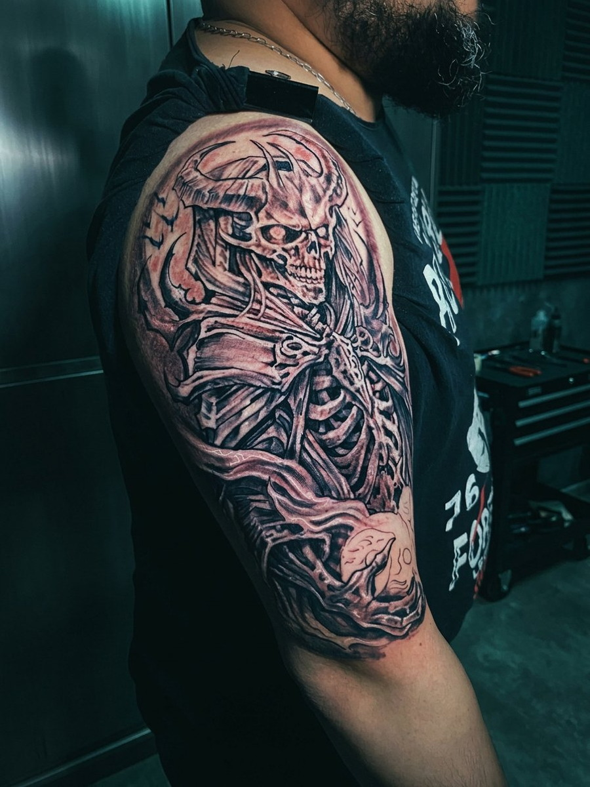
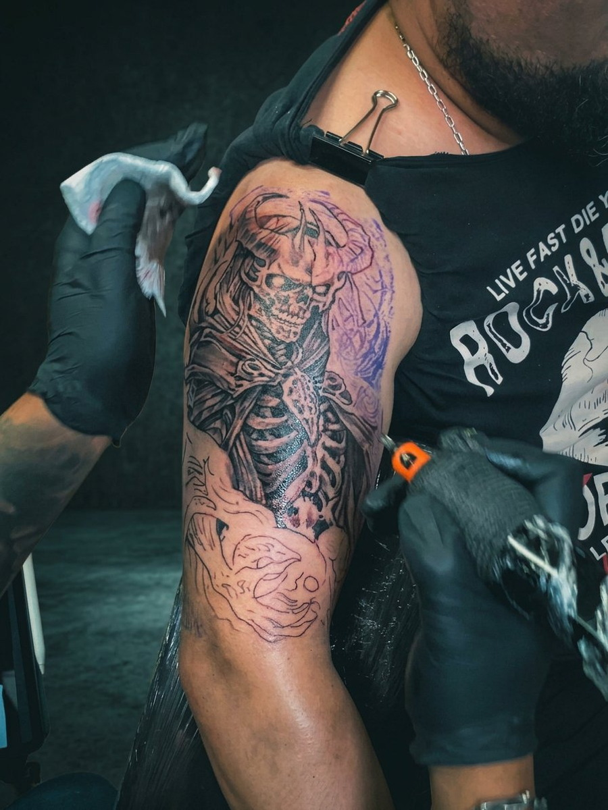
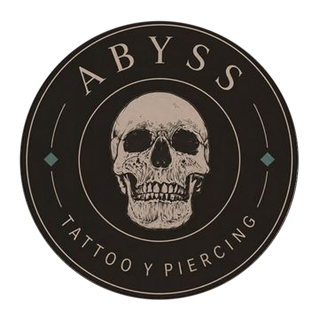

01 · background (Z: -110px)
02 · studio_environment (Z: -65px · #596047 / #161616)

03 · atmospheric_light (Z: -35px · #8A642B / #C49A50)
04 · photographic_subject (Z: 0px · TATUAJE REAL INMUTABLE)


FOTO REAL · TATUAJE INMUTABLE
05 · foreground (Z: +38px · Plano cercano parallax)
06 · ABYSS_typography (Z: +58px · Opposite Motion)
TATTOO STUDIO
ABYSS
07 · gold_graphics (Z: +72px · Oro envejecido #8A642B / #C49A50)
J.J. PÉREZ 528 · SAN BERNARDO · 33°35'S 70°42'W · EST. 2009

08 · micro_atmosphere (Z: +88px · Grano 35mm + Micro-atmósfera)